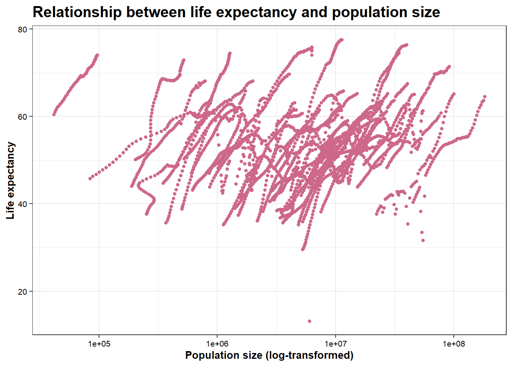

library(ggplot2)# Look at help file for gapminder datahelp(gapminder)
starting httpd help server ... done
Let’s take a look at the dataset first. I want to get an overview of the number of observations, the number of variables, the class of each variable, and the distribution of each variable.
# Determine the type of gapminderclass(gapminder)
[1] "data.frame"
# Get an overview of data structure: whole datasetstr(gapminder)
'data.frame': 10545 obs. of 9 variables:
$ country : Factor w/ 185 levels "Albania","Algeria",..: 1 2 3 4 5 6 7 8 9 10 ...
$ year : int 1960 1960 1960 1960 1960 1960 1960 1960 1960 1960 ...
$ infant_mortality: num 115.4 148.2 208 NA 59.9 ...
$ life_expectancy : num 62.9 47.5 36 63 65.4 ...
$ fertility : num 6.19 7.65 7.32 4.43 3.11 4.55 4.82 3.45 2.7 5.57 ...
$ population : num 1636054 11124892 5270844 54681 20619075 ...
$ gdp : num NA 1.38e+10 NA NA 1.08e+11 ...
$ continent : Factor w/ 5 levels "Africa","Americas",..: 4 1 1 2 2 3 2 5 4 3 ...
$ region : Factor w/ 22 levels "Australia and New Zealand",..: 19 11 10 2 15 21 2 1 22 21 ...
# Get a summary of data: whole datasetsummary(gapminder)
country year infant_mortality life_expectancy
Albania : 57 Min. :1960 Min. : 1.50 Min. :13.20
Algeria : 57 1st Qu.:1974 1st Qu.: 16.00 1st Qu.:57.50
Angola : 57 Median :1988 Median : 41.50 Median :67.54
Antigua and Barbuda: 57 Mean :1988 Mean : 55.31 Mean :64.81
Argentina : 57 3rd Qu.:2002 3rd Qu.: 85.10 3rd Qu.:73.00
Armenia : 57 Max. :2016 Max. :276.90 Max. :83.90
(Other) :10203 NA's :1453
fertility population gdp continent
Min. :0.840 Min. :3.124e+04 Min. :4.040e+07 Africa :2907
1st Qu.:2.200 1st Qu.:1.333e+06 1st Qu.:1.846e+09 Americas:2052
Median :3.750 Median :5.009e+06 Median :7.794e+09 Asia :2679
Mean :4.084 Mean :2.701e+07 Mean :1.480e+11 Europe :2223
3rd Qu.:6.000 3rd Qu.:1.523e+07 3rd Qu.:5.540e+10 Oceania : 684
Max. :9.220 Max. :1.376e+09 Max. :1.174e+13
NA's :187 NA's :185 NA's :2972
region
Western Asia :1026
Eastern Africa : 912
Western Africa : 912
Caribbean : 741
South America : 684
Southern Europe: 684
(Other) :5586
Sub-dataset for African countries
I’m particularly interested in observations from African countries. I’m filtering all rows by the variable Africa. The sub-dataset is named africadata.
# Filter observations from Africaafricadata <- gapminder %>%filter(continent=="Africa")
Now let’s get an overview of the sub-dataset. It should contain 2907 observations.
# Get an overview of data structure: africadatastr(africadata)
'data.frame': 2907 obs. of 9 variables:
$ country : Factor w/ 185 levels "Albania","Algeria",..: 2 3 18 22 26 27 29 31 32 33 ...
$ year : int 1960 1960 1960 1960 1960 1960 1960 1960 1960 1960 ...
$ infant_mortality: num 148 208 187 116 161 ...
$ life_expectancy : num 47.5 36 38.3 50.3 35.2 ...
$ fertility : num 7.65 7.32 6.28 6.62 6.29 6.95 5.65 6.89 5.84 6.25 ...
$ population : num 11124892 5270844 2431620 524029 4829291 ...
$ gdp : num 1.38e+10 NA 6.22e+08 1.24e+08 5.97e+08 ...
$ continent : Factor w/ 5 levels "Africa","Americas",..: 1 1 1 1 1 1 1 1 1 1 ...
$ region : Factor w/ 22 levels "Australia and New Zealand",..: 11 10 20 17 20 5 10 20 10 10 ...
# Get a summary of data: africadatasummary(africadata)
country year infant_mortality life_expectancy
Algeria : 57 Min. :1960 Min. : 11.40 Min. :13.20
Angola : 57 1st Qu.:1974 1st Qu.: 62.20 1st Qu.:48.23
Benin : 57 Median :1988 Median : 93.40 Median :53.98
Botswana : 57 Mean :1988 Mean : 95.12 Mean :54.38
Burkina Faso: 57 3rd Qu.:2002 3rd Qu.:124.70 3rd Qu.:60.10
Burundi : 57 Max. :2016 Max. :237.40 Max. :77.60
(Other) :2565 NA's :226
fertility population gdp continent
Min. :1.500 Min. : 41538 Min. :4.659e+07 Africa :2907
1st Qu.:5.160 1st Qu.: 1605232 1st Qu.:8.373e+08 Americas: 0
Median :6.160 Median : 5570982 Median :2.448e+09 Asia : 0
Mean :5.851 Mean : 12235961 Mean :9.346e+09 Europe : 0
3rd Qu.:6.860 3rd Qu.: 13888152 3rd Qu.:6.552e+09 Oceania : 0
Max. :8.450 Max. :182201962 Max. :1.935e+11
NA's :51 NA's :51 NA's :637
region
Eastern Africa :912
Western Africa :912
Middle Africa :456
Northern Africa :342
Southern Africa :285
Australia and New Zealand: 0
(Other) : 0
Now I’m creating two new sub-datasets from africadata. One of them only contains variables infant_mortality and life_expectancy, named inf_life. The other one only contains variables population and life_expectancy, named pop_life.
# New dataset inf_life: infant_mortality & life_expectancyinf_life <- africadata %>%select(infant_mortality, life_expectancy)# New dataset pop_life: population & life_expectancypop_life <- africadata %>%select(population, life_expectancy)
Let’s take a look at the two new sub-datasets.
# Get an overview of data structure: inf_lifestr(inf_life)
'data.frame': 2907 obs. of 2 variables:
$ infant_mortality: num 148 208 187 116 161 ...
$ life_expectancy : num 47.5 36 38.3 50.3 35.2 ...
# Get a summary of data: inf_lifesummary(inf_life)
infant_mortality life_expectancy
Min. : 11.40 Min. :13.20
1st Qu.: 62.20 1st Qu.:48.23
Median : 93.40 Median :53.98
Mean : 95.12 Mean :54.38
3rd Qu.:124.70 3rd Qu.:60.10
Max. :237.40 Max. :77.60
NA's :226
# Get an overview of data structure: pop_lifestr(pop_life)
'data.frame': 2907 obs. of 2 variables:
$ population : num 11124892 5270844 2431620 524029 4829291 ...
$ life_expectancy: num 47.5 36 38.3 50.3 35.2 ...
# Get a summary of data: pop_lifesummary(pop_life)
population life_expectancy
Min. : 41538 Min. :13.20
1st Qu.: 1605232 1st Qu.:48.23
Median : 5570982 Median :53.98
Mean : 12235961 Mean :54.38
3rd Qu.: 13888152 3rd Qu.:60.10
Max. :182201962 Max. :77.60
NA's :51
Plotting
Next, let’s look at the relationship between life expectancy and infant mortality in African countries. I’m plotting a scatterplot to show their correlation using the ggplot2 package.
# Scatterplot for life_expectancy ~ infant_mortalityp_inf_life <-ggplot(inf_life, aes(x=infant_mortality, y=life_expectancy))+geom_point(color="skyblue3", size=1.2)+theme_bw()+labs(title="Relationship between life expectancy and infant mortality", x="Infant mortality", y="Life expectancy")+theme(axis.title.x=element_text(size=10, color="black", face="bold"),axis.title.y=element_text(size=10, color="black", face="bold"),axis.text.x=element_text(color="black", size=8),axis.text.y=element_text(color="black", size=8),plot.title=element_text(size=15, color="black", face="bold"))p_inf_life
Warning: Removed 226 rows containing missing values or values outside the scale range
(`geom_point()`).
As shown, in African countries, life expectancy is negatively associated with infant mortality. This makes sense as lower life expectancy is related to higher infant mortality. Of note, we receive a warning message saying “Removed 226 rows containing missing values or values outside the scale range (geom_point()).”. This is likely caused by missing values in the inf_life dataset.
Then, let’s make another scatterplot for life expectancy and population size. As shown in the output above, values in the population varialbe are much larger due to its scale. To avoid a too sparse scatterplot, I take the logarithmic transformation of population to make the plot.
# Scatterplot for life_expectancy ~ populationp_pop_life <-ggplot(pop_life, aes(x=population, y=life_expectancy))+geom_point(color="palevioletred3", size=1.2)+scale_x_log10()+# To make the X-axis log-transformedtheme_bw()+labs(title="Relationship between life expectancy and population size", x="Population size (log-transformed)", y="Life expectancy")+theme(axis.title.x=element_text(size=10, color="black", face="bold"),axis.title.y=element_text(size=10, color="black", face="bold"),axis.text.x=element_text(color="black", size=8),axis.text.y=element_text(color="black", size=8),plot.title=element_text(size=15, color="black", face="bold"))p_pop_life
Warning: Removed 51 rows containing missing values or values outside the scale range
(`geom_point()`).

The plot above shows that life expectancy and population size generally follow a positive association. The code also output a warning message similar to the previous one because of missing values.
I noticed that both figures above show strips of points. It seems like the points are grouped by some categories and the positive/negative association exists within in each category. Now let’s take another look at the data structure and find out why.
# Get an overview of data structure: africadatastr(africadata)
'data.frame': 2907 obs. of 9 variables:
$ country : Factor w/ 185 levels "Albania","Algeria",..: 2 3 18 22 26 27 29 31 32 33 ...
$ year : int 1960 1960 1960 1960 1960 1960 1960 1960 1960 1960 ...
$ infant_mortality: num 148 208 187 116 161 ...
$ life_expectancy : num 47.5 36 38.3 50.3 35.2 ...
$ fertility : num 7.65 7.32 6.28 6.62 6.29 6.95 5.65 6.89 5.84 6.25 ...
$ population : num 11124892 5270844 2431620 524029 4829291 ...
$ gdp : num 1.38e+10 NA 6.22e+08 1.24e+08 5.97e+08 ...
$ continent : Factor w/ 5 levels "Africa","Americas",..: 1 1 1 1 1 1 1 1 1 1 ...
$ region : Factor w/ 22 levels "Australia and New Zealand",..: 11 10 20 17 20 5 10 20 10 10 ...
# Get a summary of data: africadatasummary(africadata)
country year infant_mortality life_expectancy
Algeria : 57 Min. :1960 Min. : 11.40 Min. :13.20
Angola : 57 1st Qu.:1974 1st Qu.: 62.20 1st Qu.:48.23
Benin : 57 Median :1988 Median : 93.40 Median :53.98
Botswana : 57 Mean :1988 Mean : 95.12 Mean :54.38
Burkina Faso: 57 3rd Qu.:2002 3rd Qu.:124.70 3rd Qu.:60.10
Burundi : 57 Max. :2016 Max. :237.40 Max. :77.60
(Other) :2565 NA's :226
fertility population gdp continent
Min. :1.500 Min. : 41538 Min. :4.659e+07 Africa :2907
1st Qu.:5.160 1st Qu.: 1605232 1st Qu.:8.373e+08 Americas: 0
Median :6.160 Median : 5570982 Median :2.448e+09 Asia : 0
Mean :5.851 Mean : 12235961 Mean :9.346e+09 Europe : 0
3rd Qu.:6.860 3rd Qu.: 13888152 3rd Qu.:6.552e+09 Oceania : 0
Max. :8.450 Max. :182201962 Max. :1.935e+11
NA's :51 NA's :51 NA's :637
region
Eastern Africa :912
Western Africa :912
Middle Africa :456
Northern Africa :342
Southern Africa :285
Australia and New Zealand: 0
(Other) : 0
Note that there are two variables country and year, denoting the data source for each observation. In this case, the variable country serves as a classification, stratifying each observation into the country it belongs. Each country have a different annually record of population size, infant mortality, and life expectancy. Hence, the strips of points actually denote strips of different countries.
I also notice that there are missing values in infant_mortality from africadata. Here I output the number of missing values in infant_mortality by year.
# Total number of NAs in infant_mortality from africadatasum(is.na(africadata$infant_mortality))
[1] 226
# Count the number of NAs in infant_mortality by yeartable_NA <- africadata %>%group_by(year) %>%summarize(count_NA=sum(is.na(infant_mortality)))t(table_NA) # Transpose the table since it's too long
As shown, there are missing values in infant_mortality from 1960 to 1981 and 2016. No NAs were found from 1982 to 2015. Here we extract data from only 2000 and create a new sub-dataset from africadata. We also need to check the filtered sub-dataset.
# Filter observations in 2000 from africadataafricadata2000 <- africadata %>%filter(year==2000)# Get an overview of data structure: africadatastr(africadata2000)
'data.frame': 51 obs. of 9 variables:
$ country : Factor w/ 185 levels "Albania","Algeria",..: 2 3 18 22 26 27 29 31 32 33 ...
$ year : int 2000 2000 2000 2000 2000 2000 2000 2000 2000 2000 ...
$ infant_mortality: num 33.9 128.3 89.3 52.4 96.2 ...
$ life_expectancy : num 73.3 52.3 57.2 47.6 52.6 46.7 54.3 68.4 45.3 51.5 ...
$ fertility : num 2.51 6.84 5.98 3.41 6.59 7.06 5.62 3.7 5.45 7.35 ...
$ population : num 31183658 15058638 6949366 1736579 11607944 ...
$ gdp : num 5.48e+10 9.13e+09 2.25e+09 5.63e+09 2.61e+09 ...
$ continent : Factor w/ 5 levels "Africa","Americas",..: 1 1 1 1 1 1 1 1 1 1 ...
$ region : Factor w/ 22 levels "Australia and New Zealand",..: 11 10 20 17 20 5 10 20 10 10 ...
# Get a summary of data: africadatasummary(africadata2000)
country year infant_mortality life_expectancy
Algeria : 1 Min. :2000 Min. : 12.30 Min. :37.60
Angola : 1 1st Qu.:2000 1st Qu.: 60.80 1st Qu.:51.75
Benin : 1 Median :2000 Median : 80.30 Median :54.30
Botswana : 1 Mean :2000 Mean : 78.93 Mean :56.36
Burkina Faso: 1 3rd Qu.:2000 3rd Qu.:103.30 3rd Qu.:60.00
Burundi : 1 Max. :2000 Max. :143.30 Max. :75.00
(Other) :45
fertility population gdp continent
Min. :1.990 Min. : 81154 Min. :2.019e+08 Africa :51
1st Qu.:4.150 1st Qu.: 2304687 1st Qu.:1.274e+09 Americas: 0
Median :5.550 Median : 8799165 Median :3.238e+09 Asia : 0
Mean :5.156 Mean : 15659800 Mean :1.155e+10 Europe : 0
3rd Qu.:5.960 3rd Qu.: 17391242 3rd Qu.:8.654e+09 Oceania : 0
Max. :7.730 Max. :122876723 Max. :1.329e+11
region
Eastern Africa :16
Western Africa :16
Middle Africa : 8
Northern Africa : 6
Southern Africa : 5
Australia and New Zealand: 0
(Other) : 0
Here I extract the required variables for plots from only the sub-dataset of year 2000.
# New dataset inf_life of 2000: infant_mortality & life_expectancyinf_life2000 <- africadata2000 %>%select(infant_mortality, life_expectancy)# New dataset pop_life of 2000: population & life_expectancypop_life2000 <- africadata2000 %>%select(population, life_expectancy)
Below I make the scatterplots for life_expectancy ~ infant_mortality and life_expectancy ~ population again but only using data from year 2000.
# Scatterplot for life_expectancy ~ infant_mortality of year 2000p_inf_life2 <-ggplot(inf_life2000, aes(x=infant_mortality, y=life_expectancy))+geom_point(color="skyblue3", size=2)+theme_bw()+labs(title="Relationship between life expectancy and infant mortality in 2000", x="Infant mortality", y="Life expectancy")+theme(axis.title.x=element_text(size=10, color="black", face="bold"),axis.title.y=element_text(size=10, color="black", face="bold"),axis.text.x=element_text(color="black", size=8),axis.text.y=element_text(color="black", size=8),plot.title=element_text(size=15, color="black", face="bold"))p_inf_life2
# Scatterplot for life_expectancy ~ population of year 2000p_pop_life2 <-ggplot(pop_life2000, aes(x=population, y=life_expectancy))+geom_point(color="palevioletred3", size=2)+scale_x_log10()+# To make the X-axis log-transformedtheme_bw()+labs(title="Relationship between life expectancy and population size in 2000", x="Population size (log-transformed)", y="Life expectancy")+theme(axis.title.x=element_text(size=10, color="black", face="bold"),axis.title.y=element_text(size=10, color="black", face="bold"),axis.text.x=element_text(color="black", size=8),axis.text.y=element_text(color="black", size=8),plot.title=element_text(size=15, color="black", face="bold"))p_pop_life2
As expected, life expectancy is negatively correlated to infant mortality, and has a generally positive association with population size. This is consistent with our previous findings. Notably, we don’t receive the warning message this time as no missing values exist in the data of year 2000.
Model fitting
To provide statistical inference from their association, I want to fit simple linear regression models. First of all, I use life expectancy as the response and infant mortality as the predictor to fit the model.
# Linear regression: life_expectancy ~ infant_mortalityfit1 <-lm(life_expectancy ~ infant_mortality, data=inf_life2000)summary(fit1) # Output the fitting result
Call:
lm(formula = life_expectancy ~ infant_mortality, data = inf_life2000)
Residuals:
Min 1Q Median 3Q Max
-22.6651 -3.7087 0.9914 4.0408 8.6817
Coefficients:
Estimate Std. Error t value Pr(>|t|)
(Intercept) 71.29331 2.42611 29.386 < 2e-16 ***
infant_mortality -0.18916 0.02869 -6.594 2.83e-08 ***
---
Signif. codes: 0 '***' 0.001 '**' 0.01 '*' 0.05 '.' 0.1 ' ' 1
Residual standard error: 6.221 on 49 degrees of freedom
Multiple R-squared: 0.4701, Adjusted R-squared: 0.4593
F-statistic: 43.48 on 1 and 49 DF, p-value: 2.826e-08
Based on the output above, the coefficient of infant_mortality is -0.18916 (se=0.02896) with a p-value less than 0.05. Under the 95% confidence level, we have enough evidence to reject the null hypothesis and conclude that the coefficient of infant_mortality is not zero. This confirms the negative association between life expectancy and infant_mortality.
Next, I fit another linear regression using life expectancy as the response and population size as the predictor. But before that, I want to apply the logarithmic transformation to population because of its large scale.
# Log-transformation for population sizepop_life2000$log_population <-log(pop_life2000$population, 10)# Linear regression: life_expectancy ~ log_populationfit2 <-lm(life_expectancy ~ log_population, data=pop_life2000)summary(fit2) # Output the fitting result
Call:
lm(formula = life_expectancy ~ log_population, data = pop_life2000)
Residuals:
Min 1Q Median 3Q Max
-19.113 -4.809 -1.554 3.907 18.863
Coefficients:
Estimate Std. Error t value Pr(>|t|)
(Intercept) 65.324 12.520 5.217 3.65e-06 ***
log_population -1.315 1.829 -0.719 0.476
---
Signif. codes: 0 '***' 0.001 '**' 0.01 '*' 0.05 '.' 0.1 ' ' 1
Residual standard error: 8.502 on 49 degrees of freedom
Multiple R-squared: 0.01044, Adjusted R-squared: -0.009755
F-statistic: 0.517 on 1 and 49 DF, p-value: 0.4755
As shown, the coefficient of log_population is -1.315 (se=1.829) with a p-value=0.476. Under the 95% confidence level, we fail to reject the null hypothesis that the coefficient of log_population is zero. This means the association between life expectancy and population size is not statistically significant.